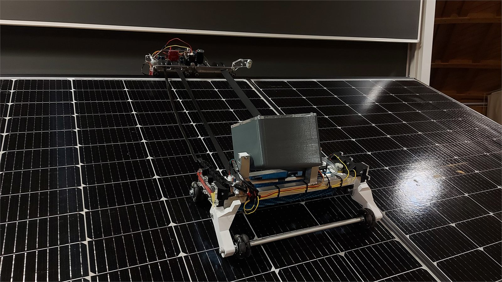
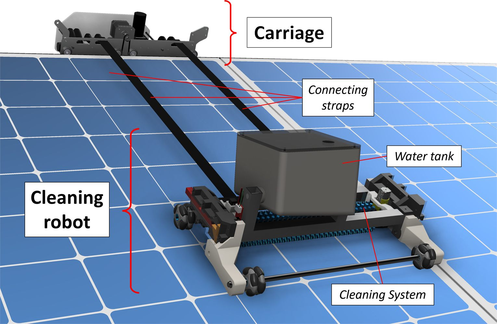
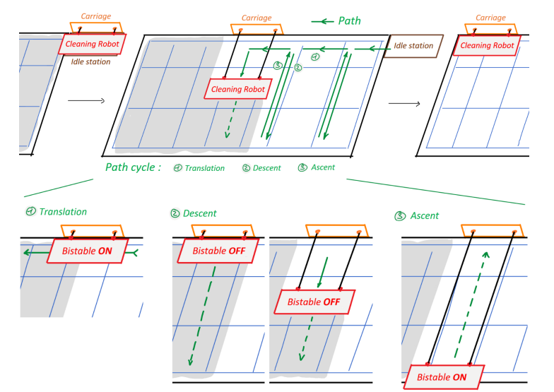
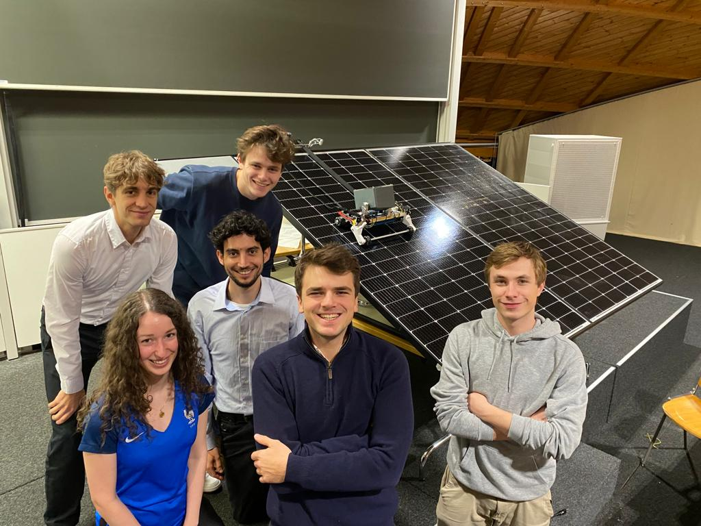

Product Design and Systems Engineering
Autonomous Solar Panel Cleaner
Team design-and-build project that took an idea for autonomous photovoltaic maintenance through planning, concept development and fabrication of a working prototype.




Context
Product Design and Systems Engineering is a course built around the full engineering process: teams define a product, study its market and constraints, plan the project, design the system and finally build a functional prototype for presentation at the end of the semester.
What I worked on
Our group chose to design an autonomous cleaner for inclined solar installations, with the goal of improving both maintenance efficiency and energy yield. My work was broad during the planning phase and then became more focused on mechanical design and integration once the concept solidified.
Together with J. Huser, I designed and built the main mechanical structure of the system while other teammates concentrated on software, electronics and project management. Most of the prototype was built from raw materials in EPFL's mechanical and electrical prototyping spaces.
Outcome
- A fully autonomous cleaner conceived as an add-on for inclined photovoltaic installations.
- A rail-mounted carriage that winches the cleaning robot across the panel through a worm-gear drive.
- Integrated sensors for end-point detection and automated motion across the solar installation.
- A cleaning module with rotating brush, water dispensing and a mechanical bistable system to lift the brush over already cleaned areas.
- A complete prototype built and successfully demonstrated at the end of the course.